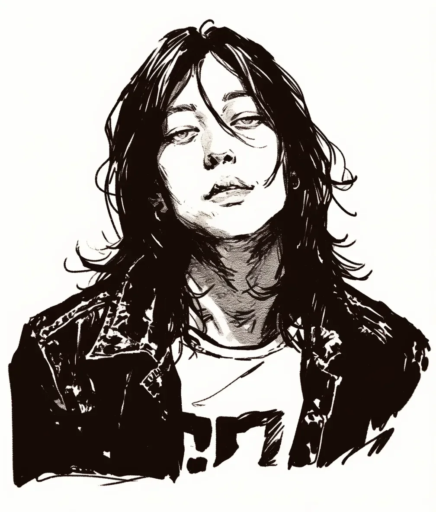

새벽 4시의 공기는 깨진 유리처럼 차갑다.\
[The 4 a.m. air is cold as shattered glass.]
준우는 가죽 재킷의 깃을 세우는 대신, 헝클어진 머리카락 사이로 드러난 눈을 가늘게 떴다.\
[Instead of popping the collar of his leather jacket, Jun-u narrows his eyes, visible through his messy hair.]
머리 위에서 깜빡이는 가로등이 마치 그를 심문하는 것 같다.\
[The streetlamp blinking overhead seems to be interrogating him.]
귓가에는 클럽 지하에서 울리던 베이스 기타의 진동이 이명처럼 남아 있다.\
[The vibration of the bass guitar from the underground club remains in his ears like tinnitus.]
도로 위를 미끄러지는 택시가 잠시 속도를 늦췄다가, 그의 텅 빈 표정을 읽고는 다시 멀어진다.\
[A taxi gliding over the asphalt slows momentarily, reads his empty expression, and speeds away again.]
티셔츠에 적힌, 이제는 아무도 기억하지 못하는 밴드의 로고가 주름진 천 속에 묻혀 있다.\
[The logo of a band no one remembers anymore is buried in the folds of his wrinkled t-shirt.]
그는 주머니 깊숙이 손을 찔러 넣고 라이터를 만지작거린다.\
[He thrusts his hands deep into his pockets and fingers his lighter.]
차가운 금속의 감촉.\
[The touch of cold metal.]
하지만 꺼내지는 않는다.\
[But he doesn't take it out.]
지금 필요한 건 담배 연기가 아니다.\
[What he needs right now isn't cigarette smoke.]
어쩌면 그는 이 몽롱하고 무거운 정적 속에, 박제된 나비처럼 영원히 머물고 싶은 것일지도 모른다.\
[Perhaps he wants to stay forever in this hazy, heavy silence, like a pinned butterfly.]
어제와 오늘 사이, 그 틈새에서.\
[In that crevice between yesterday and today.]